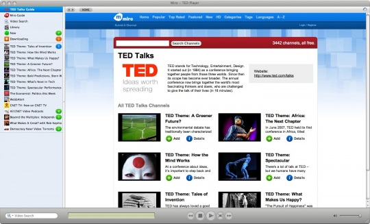

Como introducción, para aquellos que aun no conozcan TED (Technology, Enternaiment, Design) y sus famosas charlas, TED Talks, podría resumirlo como algo así como la versión en vídeo de las revistas de "divulgación científica y tecnológica" (acogiendo bajo esta denominación desde las más banales a las mas prestigiosas) que todos conocemos como Muy Interesante, Investigación y Ciencia, Geo, Quo, National Geographic, Popular Science, Nature, Science, Lancet, etc... con la ventaja de la escasa distorsión del mensaje y lo conciso del mismo. Esto se debe a que no tenemos que pasar por el filtro del periodista (cuando no es un paper), es el propio interesado quien nos relata sus ideas personalmente y que la gran mayoría de las charlas esta sometida a un tiempo limite de 18 minutos, ya que es el tiempo máximo que se ha calculado que podemos estar centrados en un solo asunto sin perder el interés o la atención. Evidentemente no son comparables a un articulo amplio, detallado y bien redactado o a un buen documental, ni tampoco lo pretenden. No se trata de profundizar en los temas, se trata de que el ponente consiga transmitirte sus ideas, su entusiasmo y la trascendencia de las mismas, y en la mayoría de los casos lo consiguen, y algunas de estas charlas son de una calidad y de una trascendencia tales, que deberían tener lugar también en los medios tradicionales (TV). La calidad de estas charlas es tal que es difícil no quedarte impresionado (cuando no deslumbrado) al final de las mismas y contagiado del entusiasmo de los ponentes, la apertura de miras, conocimiento y humildad que te proporcionan (amen de ayudarte a creer un poquito más en la humanidad) no tiene parangón actualmente. Desde la serie Cosmos de Carl Sagan, no he encontrado nada parecido que me invitara tanto a pensar y me abriera tanto la mente. Lo único que se acerca, entre la telebasura reinante, en el mundo audiovisual actual, es el programa Redes de Eduardo Punset.
Para una definición más precisa, un extracto del articulo de la Wikipedia:
TED (Tecnología, Entretenimiento, Diseño, del inglés: Technology, Entertainment, Design) es una organización sin ánimo de lucro dedicada a las "ideas que vale la pena difundir" (del inglés: Ideas worth spreading). TED es ampliamente conocida por su conferencia anual (TED Conference) y sus charlas (TED Talks) que cubren un amplio espectro de temas que incluyen ciencias, arte y diseño, política, educación, cultura, negocios, asuntos globales, tecnología y desarrollo, y entretenimiento. Los conferenciantes han incluido a personas como el ex-Presidente de los Estados Unidos Bill Clinton, los laureados con el Premio Nobel James D. Watson, Murray Gell-Mann, y Al Gore, el co-fundador de Microsoft, Bill Gates, los co-fundadores de Google Sergey Brin y Larry Page, y Billy Graham
Estas charlas se publican en su pagina web actualmente a un ritmo aproximado de una por día de semana (esto es, lunes a viernes). Actualmente (julio 2010) hay más de 700 charlas disponibles en su página y se han visionado más de 290.000.000 de veces (julio 2010), para que os hagáis una idea de la repercusión y trascendencia de las mismas.
El caso es que yo las sigo habitualmente, vamos que veo todas las que publican. Al principio me limitaba a enterarme de la publicación de las mismas por mi lector de fuentes RSS, veía el asunto de las mismas y si me parecía interesante, las veía directamente a través de su página web. Luego, cansado de los inconvenientes de verlas a través de un navegador web a pantalla completa, en flash desde Linux, dí un paso más y me pase a un programa como Miro, de hecho hay una versión del mismo para TED. Para el que no lo conozca, Miro es un reproductor multimedia open source multiplataforma que cuenta con un agregador de fuentes RSS y torrents para podcasts de audio y vídeo. Así que él automáticamente se baja las charlas a medida que se van publicando y tu solo tienes que visionarlas desde el mismo, decidiendo después si las eliminas o las conservas.

Pero Miro para mi tenia dos grandes problemas, el primero que no descarga los subtitulos, y el segundo que la visualización de estos es bastante pobre (al menos comparado con la configuración que tengo en mi SMPlayer). No es que los subtitulos me sean esenciales (todas las charlas son en ingles) pero si que ayudan mucho para el contexto de aquellas donde uno ni de lejos domina los tecnicismos de algunos campos, o porque no decirlo, cuando el acento o la pronunciación de algunos de los ponentes me hace imposible seguirlos sin los mismos. Siempre veo los subtitulos en el idioma original, inglés, pero siempre descargo también la versión en español porque me es muy útil en algunos momentos, como por ejemplo cuando se refieren a especies animales o vegetales de los que no conozco la traducción al español, y en lugar de tirar de diccionario continuamente, gano tiempo visionandolos en castellano.
Como uno ha de reconocer humildemente, rara es la vez que a uno no se le presente un problema que no se le haya presentado antes a otro y no haya dado con una solución valida. Luego en vez de reinventar la rueda (aunque finalmente es lo que haya acabado haciendo) me dirigí a San Google para encontrar una solución para descargar los subtitulos de las TED Talks, y he aquí, que doy con este script en Python (mi lenguaje de programación favorito). Lo empleé durante unos días (tres para ser exactos), pero no me acaba de convencer y me puse a modificarlo, y cuando estaba en ello, me dije: Que demonios! si al final no te convence Miro para visionar los vídeos con subtitulos, porque no descargar también los mismos y utilizar el SMPlayer para visionarlos? Así que me puse manos a la obra, y esto es lo que salio y actualmente empleo.
El script hace uso de la fuente RSS de las TED Talks en calidad HD para conocer cuando se publica una nueva charla en la pagina. Comprueba si no esta ya descargado, si no es así, lo descarga y luego comprueba la disponibilidad de los subtitulos (español e ingles) para las charlas ya descargadas que se encuentren en la carpeta. Si encuentra alguno disponible y no descargado anteriormente, lo convierte en un nuevo fichero .srt en la carpeta. Finalmente, si se ha descargado algo (charlas o subs), manda un correo a mi usuario local notificándomelo. Esta script lo tengo automatizado mediante una tarea cron en un pequeño servidor que tengo y que se ejecuta todas las mañanas a eso de las 9:30 y que normalmente me descarga la charla del día anterior y los subtitulos en ingles de la misma y los de español de dos días antes. Esto depende mucho de la velocidad de traducción de los colaboradores, ya que a veces, cuando una charla es muy interesante, es posible que a las pocas horas dispongamos de los subtitulos en los dos idiomas.
La parte fundamental del código del script, es la siguiente:
def get_sub(tt_id , tt_intro, sub): """Get TED Subtitle in JSON format & convert it to SRT Subtitle Obtiene el subtitulo de TED en formato JSON y lo convierte al formato SRT""" def srt_time(tst): """Format Time from TED Subtitles format to SRT time Format Convierte el formato de tiempo del subtitulo TED al formato de SRT""" secs, mins, hours = ((tst / 1000) % 60), (tst / 60000), (tst / 3600000) right_srt_time = "{0:02d}:{1:02d}:{2:02d},000".format(hours, mins, secs) return right_srt_time srt_content = '' sub_log = '' tt_url = 'http://www.ted.com/talks' sub_url = '{0}/subtitles/id/{1}/lang/{2}'.format(tt_url, tt_id, sub[-7:-4]) ## Get JSON sub if FOUND: json_file = Popen(['wget', '-q', '-O', '-', sub_url], stdout=PIPE).stdout.readlines() if json_file: for line in json_file: if line.find('captions') == -1 and line.find('status') == -1: json_file.remove(line) else: sub_log += "Subtitle '{0}' not found.{1}".format(sub, os.linesep) else: json_file = urllib2.urlopen(sub_url).readlines() try: json_object = json.loads(json_file[0]) if 'captions' in json_object: caption_idx = 1 if not json_object['captions']: sub_log += ("Subtitle '{0}' not available.{1}". format(sub, os.linesep)) for caption in json_object['captions'] : start = tt_intro + caption['startTime'] end = start + caption['duration'] idx_line = '{0}'.format(caption_idx) time_line = '{0} --> {1}'.format(srt_time(start), srt_time(end)) text_line = '{0}'.format(caption['content'].encode("utf-8")) srt_content += '\n'.join([idx_line, time_line, text_line, '\n']) caption_idx += 1 elif 'status' in json_object: sub_log += ("This is an error message returned by TED:{0}{0} - {1}" "{0}{0}Probably because the subtitle '{2}' is not " "available.{0}{0}{0}" "".format(os.linesep, json_object['status']['message'], sub)) except ValueError: sub_log += ("Subtitle '{0}' it's a malformed json file.{1}". format(sub, os.linesep)) return srt_content, sub_log def check_subs(ttalk, v_name): """Check if the subtitles for the talk are downloaded, if not try to get them. Checks it for english and spanish languages Comprueba si los subtitulos para la charla estan descargados, si no, intenta obtenerlos. Lo comprueba para los idiomas español e ingles""" ## Get the names for the subtitles (for english and spanish languages) only # if they not are already downloaded subs = (s_name for s_name in ("{0}.{1}.srt".format(v_name[:-4], lang) for lang in ('eng', 'spa')) if s_name not in glob.glob('*.srt')) s_log = '' for sub in subs: ## Reads the talk web page, to search the talk's intro duration if FOUND: tt_webpage = Popen(['wget', '-q', '-O', '-', ttalk.feedburner_origlink], stdout=PIPE).stdout.read() else: tt_webpage = urllib2.urlopen(ttalk.feedburner_origlink).read() tt_intro = int(search("introDuration:(\d+),", tt_webpage).group(1)) subtitle, get_log = get_sub(ttalk.id.split(':')[-1], tt_intro, sub) s_log += get_log if subtitle: with open(sub, 'w') as srt_file: srt_file.write(subtitle) s_log += "{0}{1} downloaded.{0}".format(os.linesep, sub) return s_log def get_video(ttk, vid_url, vid_name): """Gets the TED Talk video Obtiene el video de la TED Talk""" if FOUND: Popen(['wget', '-q', '-O', vid_name, vid_url], stdout=PIPE).stdout.read() else: urllib.urlretrieve(vid_url, vid_name) v_log = '{0} ({1})\n'.format(ttk.subtitle, ttk.itunes_duration) v_log += '{0}\n\n'.format('=' * (len(ttk.subtitle) + 11)) v_log += '{0}\n\n'.format(ttk.feedburner_origlink) v_log += '{0}\n\n'.format(ttk.content[0].value) v_log += 'file://{0}\n'.format(os.path.join(os.getcwd(), vid_name)) vid_size = best_unit_size(get_size(vid_name)) v_log += '{0:.2f} {1}\n\n'.format(vid_size['s'], vid_size['u']) return v_log def main(): """main section""" #=============================================================================== # SCRIPT PARAMETERS #=============================================================================== ## The directory to store the videos and subs. # For Windows change the character '\' for the character '/', I know is # akward but is because how escape strings python ttalk_vid_dir = '/your/path/to/TED/Talks/Videos' #=============================================================================== # END PARAMETERS #=============================================================================== # initalize the log log = Logger() # log the header url = 'http://code.joedicastro.com/ted-talks-download' msg = 'Download TED Talks from HD RSS Feed' log.header(url, msg) # log the start time log.time('Start Time') os.chdir(os.path.normpath(ttalk_vid_dir)) ## Get a list of the current TED Talks downloaded in the dir videos = glob.glob('*.mp4') ## Get the last download Talk video date try: with open('.data.pkl', 'rb') as pkl_file: last = pickle.load(pkl_file) except (EOFError, IOError, pickle.PickleError): last = time.localtime(time.time() - 86400) video_dates = [] ## The TED Talks HD RSS feed ttalk_feed_url = 'http://feeds.feedburner.com/tedtalksHD' ttalk_feed = feedparser.parse(ttalk_feed_url) ## If the feed is erroneous or occurs a http or network error, log and exit! if ttalk_feed.bozo: log.list('An error occurred', str(ttalk_feed.bozo_exception)) if not WIN_OS: log.send('Download TED Talks') sys.exit(1) ## If correct, process the feed entries vids_log, subs_log = '', '' for ttalk_entrie in ttalk_feed.entries: ## Get The video url and name tt_vid_url = ttalk_entrie.enclosures[0].href tt_vid_name = tt_vid_url.split('/')[-1] ## If the video is new, download it! if ttalk_entrie.updated_parsed > last and tt_vid_name not in videos: vids_log += get_video(ttalk_entrie, tt_vid_url, tt_vid_name) videos.append(tt_vid_name) video_dates.append(ttalk_entrie.updated_parsed) ## If video is already downloaded, check if subs exists, if not, get it! if tt_vid_name in videos: subs_log += check_subs(ttalk_entrie, tt_vid_name) log.list('Talks downloaded', vids_log) log.list('Subs downloaded', [subs_log]) ## Set the last download video date if video_dates: last = max(video_dates) with open('.data.pkl', 'wb') as output: pickle.dump(last, output) log.time('End time') ## If logs any activity, sends the information mail if not WIN_OS: log.send('Download TED Talks') log.write(False) if __name__ == "__main__": WIN_OS = True if platform.system() == 'Windows' else False if not WIN_OS: FOUND = check_exec_posix('wget') main()
Y un ejemplo de un correo enviado por el mismo quedaría así:
De: youruser@yourcomputer Para: youruser@yourcomputer Asunto: Download TED Talks - Thursday 07/29/10, 17:04:52 Fecha: Thu, 29 Jul 2010 17:04:52 +0200 New TED Talk downloaded! ======================== http://www.ted.com/talks/view/id/927 Laurie Santos: A monkey economy as irrational as ours (00:19:45) Laurie Santos looks for the roots of human irrationality by watching the way our primate relatives make decisions. A clever series of experiments in "monkeynomics" shows that some of the silly choices we make, monkeys make too. file:///your/path/to/TEDTalks/LaurieSantos_2010G_480.mp4 240.7 MiB SusanShaw_2010X_480.eng.srt downloaded
Pudiendo acceder al vídeo directamente desde el correo, y si se encontraran los subtítulos para el mismo ya disponibles, visualizarlos automáticamente.
El que el script esté fundamentalmente en ingles (la mayoría de comentarios y los nombres de las variables) es que me siento más cómodo de esta manera y ayuda a que un espectro más amplio de personas sea capaz de comprenderlo. Si este script le sirve a alguien más o le inspira para crear el suyo propio, pues habrá valido la pena el publicarlo. El resto del script, TEDTalks.py está disponible en mi repositorio de bickbucket, al igual que instrucciones ampliadas de su uso.
Finalmente como ejemplo, publico una de las charlas más impactantes este año y ganadora del TED Prize, Jamie Oliver: Enseñarle a todos los niños acerca de la comida
Comentarios realizados anteriormente en Drupal
Excelente!
por Dennis el Sáb, 31/07/2010 - 21:12
Amigo, he leído con atención su articulo acerca de los subtítulos. El nivel de automatización alcanzado resulta sorprendente, sin embargo, para aquellos que no contamos con el hardware necesario se torna complicada la cosa.
En mi caso, me interesa descargar algunas (no todas) las charlas. De hecho, quisiera unas pocas, cuidadosamente seleccionadas, para presentarlas en el colegio en el cual doy clases a mis alumnos de secundaria.
¿Conoce Ud. de alguna forma de descargar en un formato legible por VLC (.SUB o .SRT, por ejemplo) los subtítulos en español de charlas seleccionadas? He estado tratando de conseguir algunos en forma infructuosa desde hace algún tiempo, aunque he conseguido algunos en formato JSON.
Gracias mil por la ayuda con este tema.
Script para subtitulos de una charla
por joe di castro el Dom, 01/08/2010 - 01:38
Bueno, para conseguir eso que me comentas, he modificado el script anterior un poco y he creado este nuevo script.
La forma de utilizarlo es muy sencilla, por ejemplo para bajarse la charla de Jamie Oliver, simplemente en la linea de comandos escribes
python TEDSubs.py http://www.ted.com/talks/lang/eng/jamie_oliver.html
Y el te baja tanto los subtítulos como el vídeo. Si quisieras bajarte solo los
subtítulos, bastaría con que añadieras la opción -s ó --only_subs, quedaría
así:
python TEDSubs.py -s http://www.ted.com/talks/lang/eng/jamie_oliver.html
Como ves es muy sencillo, solo tendrías que sustituir la dirección de la charla de Oliver por la que deseas bajar.
Espero que te sirva.
Saludos
TED
por Ignacio el Mié, 04/08/2010 - 01:02
Estimado muy bueno lo que haces, me parecen excelentes los vídeos y me gustaría contar con ellos. ¿Donde corro el script?¿podrías subírmelos con subtítulos a algún gestor o ftp?
Muchas gracias
Vamos por partes...
por joe di castro el Jue, 05/08/2010 - 19:47
Vamos por partes...
Los scripts los ejecutas en tu ordenador, lo único necesario es el lenguaje de programación Python y una conexión a Internet. Si tu maquina corre en linux, el python lo tienes instalado por defecto en casi todas las distribuciones. Si corre en Windows o Mac, lo puedes descargar en Python.org
Para correr los scripts, en la linea de comandos solo necesitas ejecutar estas lineas de comando:
python TEDTalks.py
para el primer script o las lineas de comando ya comentadas anteriormente para el segundo script.
Para descargarlos, puedes o bien copiar y pegar el código tal y como aparece en el articulo, o bien descargarlos:
o bien vas directamente al mi repositorio en bitbucket
Eso si, hay que tener en cuenta que en el caso del primer script, este solo se baja el vídeo del dia anterior en su primera ejecución o bien el más reciente no descargado en caso de ejecuciones sucesivas. Y como la gente de TED parece que se ha tomado un descanso en Agosto (el último vídeo es del 30 de Julio), este no descargara nada, porque de momento no hay nada que descargar. Hasta que no retornen la publicación de nuevas charlas, el primer script no bajara nuevos contenidos, igual que los tradicionales lectores RSS o el mismo Miro.
Saludos
Gracias
por Daniel el Mié, 22/09/2010 - 04:38
Hermano, muchas gracias.. excelente script.. ya te imaginaras lo importante que es que para muchos, poder adquirir estas excelente conferencias. Gracias de nuevo
Funcionan los Subtitulos?
por Xavier el Mié, 24/11/2010 - 00:35
Hola,
muchas gracias por disponibilizar los scripts.
Estoy intentando usar el segundo script (para bajar vídeos concretos) pero solo me baja el vídeo. Si lo uso con -s no me baja nada (tampoco devuelve ningún mensaje de error.
Podría ser que hayan cambiado la manera de bajar los subtítulos?
gracias por adelantado
Xavier
Si, funcionan, pero...
por joe di castro el Mié, 24/11/2010 - 09:28
Si, funcionan, pero a veces los subtítulos aún no están disponibles, o peor, el fichero original en formato json es defectuoso. Lo de que el formato json sea defectuoso suele pasar de vez en cuando y generalmente acaban solucionándolo al cabo de unos días. Debe de ser algún defecto en la traducción o al subir el fichero.
De todos modos ya he modificado el script para que te muestre un mensaje de error en caso de que no esté disponible o este defectuoso, e indicado si es el subtitulo en español o ingles. Puedes descargarlo de aquí o del repositorio. Gracias por informarme del error, se me había escapado el proporcionar esta información.
Y voy a mirar la manera de convertir igualmente el subtitulo de json a srt aunque el json esté malformado siempre que sea posible. No será muy difícil.
Saludos
Actualización: Bueno, he encontrado un fallo, a veces cuando la página termina un cierto tiempo en responder, no cargaba algunos ficheros json de subtítulos completos, y lo interpretaba como un fichero json defectuoso. Ya he corregido el error, substituyendo la función que empleaba para la descarga por otra que siempre descarga el fichero completo.
Bueno, ya estan incorporadas
por joe di castro el Mié, 24/11/2010 - 23:26
Bueno, ya están incorporadas las mejoras también al otro script. En principio no veo necesario el crear el método para los ficheros JSON defectuosos, en parte porque sería replicar más o menos lo que ya hace el modulo json y en parte porque los JSON defectuosos provenían del empleo de la librería de python urllib para descargarlos, lo que a veces por timeouts no conseguía hacerlo del todo. El emplear la librería urllib2 soluciona este problema puesto que si los descarga al completo.
De todos modos ahora se reportan todos los códigos de error que aparezcan, tanto los que genero yo en el script, como los originales generados por TED (en realidad dotSUB, que es el que proporciona los subtítulos para TED) y les haré un seguimiento. Porque puede que si estén cambiando algo, dados los errores que reportan algunos de los últimos vídeos.
Saludos y gracias por reportarme el fallo, Xavier.
Aun tengo algun problemilla
por Xavier el Jue, 25/11/2010 - 00:40
Muchas gracias por tan rápida respuesta. Me he copiado el código para bajar los vídeos individuales, pero aun tengo problemas. Esta vez parece como si me faltara algún modulo de python, aunque no se ni cual ni como debo actualizarlo. Tengo el siguiente error:
Traceback (most recent call last): File "./TEDVideos.py", line 184, in <module> main() File "./TEDVideos.py", line 172, in main ttalk_webpage).group(1)) AttributeError: 'NoneType' object has no attribute 'group'
(El programa TEDVideos.py es el nombre que le he dado yo a tu código)
muchas gracias de antemano
No, en este caso no te falta
por joe di castro el Jue, 25/11/2010 - 10:12
No, en este caso no te falta ningún modulo para ejecutar el script, eso es algo que ya tengo contemplado y es lo primero que compruebo, y lanzo un aviso del modulo que es necesario para ejecutarlo si no se encuentra.
El error que me muestras es porque intento seleccionar uno de entre los resultados de una búsqueda de datos dentro de una página web, y al ser el resultado de la búsqueda vacío arroja ese error. Es un error que tampoco tenía contemplado porque asumía que en un principio las direcciones web introducidas serían correctas, algo que voy a contemplar a partir de ahora, para avisar al usuario.
Ese error te lo da porque no encuentra lo que busca, el identificador único de la charla, en la página web que le proporcionas. Lo raro es que si fuera una dirección web incorrecta, el error tendría que producirse antes, cuando busca la duración de la introducción previa al vídeo. Lo he probado con unas 25 charlas diferentes y no he conseguido reproducir el error. La mejora forma de entender lo que ha pasado es que me proporciones la dirección web que te da el error para comprobar lo que ocurre.
Saludos
Actualización: He añadido mensajes de error para contemplar estas posibilidades, así será más fácil diagnosticar los fallos.
En efecto, no encuentra la página
por Xavier el Jue, 25/11/2010 - 12:01
Tal y como predices, no parece encontrar la pagina buscada. Ahora me lanza este error:
Some data not found in this URL: http://www.ted.com/talks/lang/eng/jamie_oliver.html Please report this error and provides the URL to check at: http://code.joedicastro.com/ted-talks-download/issues/new Thanks for helping to fix errors.
Lo curioso es que estoy probándolo con el ejemplo que tu nos proporcionas:
TEDSubs.py -s http://www.ted.com/talks/lang/eng/jamie_oliver.html
Para asegurarme que tengo conectividad desde mi ordenador he intentado ir a la pagina web en un browser (sale ok) y he intentado bajarla con wget (baja ok).
No creo que afecte, pero estoy usando OS X 10.6
gracias
Xavier
Bueno, teniendo en cuenta los
por joe di castro el Jue, 25/11/2010 - 12:33
Bueno, teniendo en cuenta los errores que te da ahora y que al principio si podías bajar el vídeo, el problema está en el cambio que hice de urllib a urllib2, pero si el segundo te da este error, el primero no te bajaba los subtítulos. He mirado googleando un poco y si parece haber algunos problemas con estas librerías y MAC OSX, es algo que no puedo corroborar directamente puesto que no dispongo de este SO para probarlo.
Así que voy a ir por terreno seguro y aprovechando el feedback que me das, voy a prepararte una versión que emplee la herramienta externa wget para coger los datos de la página, los subtítulos y el vídeo. De este modo nos aseguramos de sortear este problema.
De nada, la pena es no tener un Mac, si no, no te hacia dar tantas vueltas.
Saludos
Ya tienes la nueva versión
por joe di castro el Jue, 25/11/2010 - 14:00
Ya tienes la nueva versión con wget, esta no debería darte esos problemas. Ya me dirás el resultado.
Saludos
fantástico!
por Xavier el Jue, 25/11/2010 - 14:43
Ahora ya funciona perfectamente!
muchas gracias por añadir estas funcionalidades y por los scripts. Van a serme de grande utilidad.
un saludo,
Xavier
De nada, gracias a ti por el
por joe di castro el Jue, 25/11/2010 - 14:47
De nada, gracias a ti por el feedback, le servirá a futuros usuarios.
Luego modifico también el otro script para emplear wget.
Un saludo
Joe
Nuevas versiones mejoradas de
por joe di castro el Mié, 01/12/2010 - 23:51
Nuevas versiones mejoradas de los scripts (versión 1.3) y probadas en las 831 charlas disponibles hasta hoy, contemplando todos los casos diferentes.
Saludos
Comentarios !